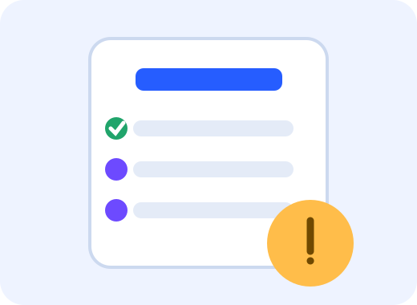

Módulo 3 · Evaluación formativa
Desafío final
Ocho preguntas para poner a prueba lo aprendido. Cada respuesta muestra una explicación y al final obtenés una insignia según tu resultado.

¿Para qué sirve este quiz?
No busca memorizar definiciones. Las preguntas plantean decisiones cotidianas para reconocer prácticas más seguras.
Retroalimentación inmediata
Después de cada elección se explica la razón. Podés volver a intentarlo y mejorar tu mejor puntaje.